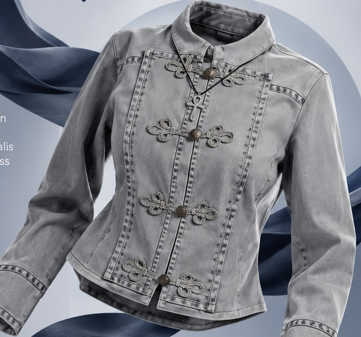
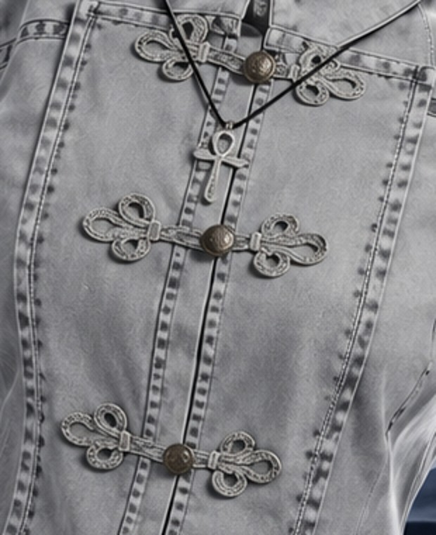
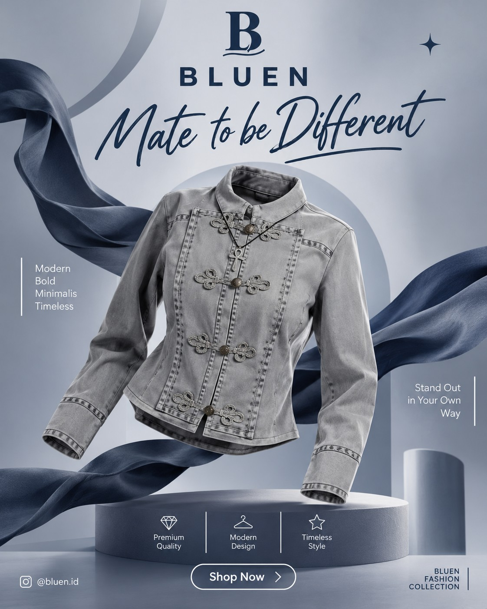
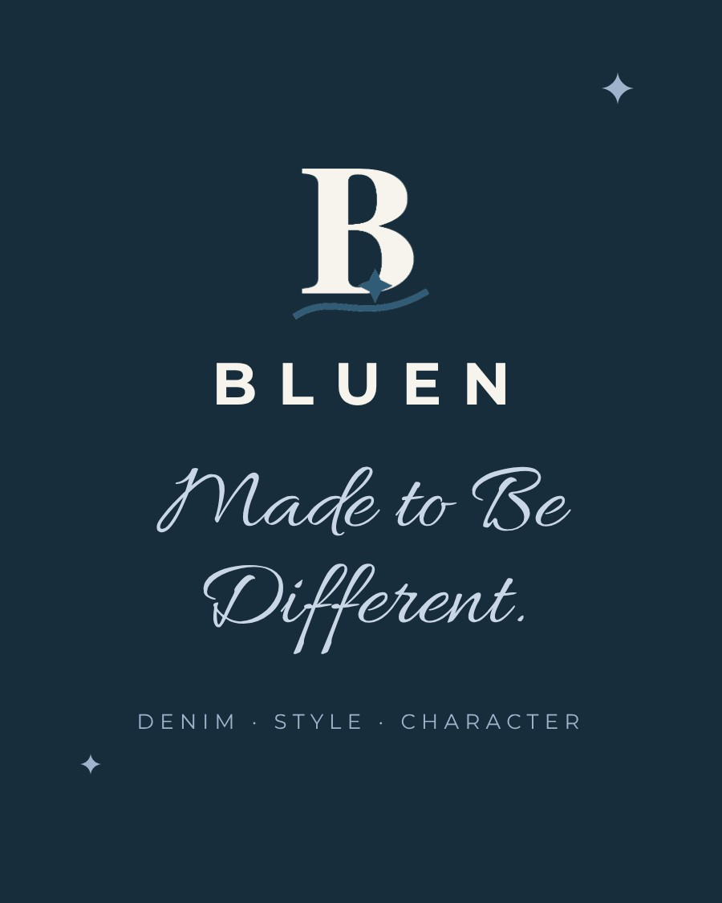
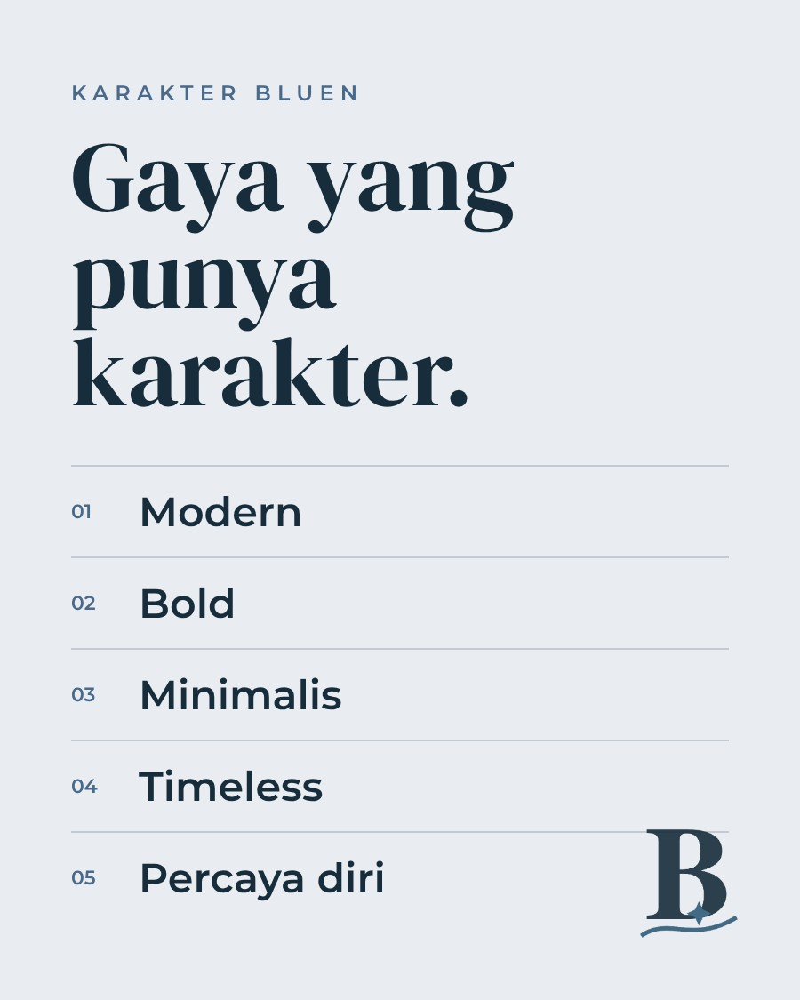

BLUEN terinspirasi dari kata blue, warna ikonik denim. Nama ini merepresentasikan identitas fashion yang modern, mudah diingat, dan fleksibel untuk berbagai produk berbahan denim.
BLUEN tidak hanya berfokus pada satu jenis pakaian, tetapi pada gaya dan karakter pemakainya. Made to Be Different: diciptakan untuk menjadi berbeda.
Identitas utama dan karakter merek yang kuat.
Keberanian untuk bersinar dan menjadi diri sendiri.
Perjalanan, pertumbuhan, dan kebebasan berekspresi.
Terinspirasi denim: kokoh, tenang, dan timeless.
Lima kategori produk berbahan denim untuk anak muda dan dewasa muda yang suka tampil modern dan ekspresif.


Jaket denim abu dengan potongan pas badan, kerah berdiri, dan aksen kancing simpul berbaris di bagian depan. Detail yang berani dalam siluet yang tetap minimalis, mudah dipadukan untuk gaya sehari-hari maupun acara.
Bahan denim pilihan yang nyaman dipakai dan awet.
Siluet bersih dengan detail yang membuatmu menonjol.
Tetap relevan dari musim ke musim, bukan sekadar ikut tren.
Cuplikan konten dari media sosial BLUEN.




Temukan koleksi terbaru dan tanya ukuran langsung lewat Instagram BLUEN.
Shop Now